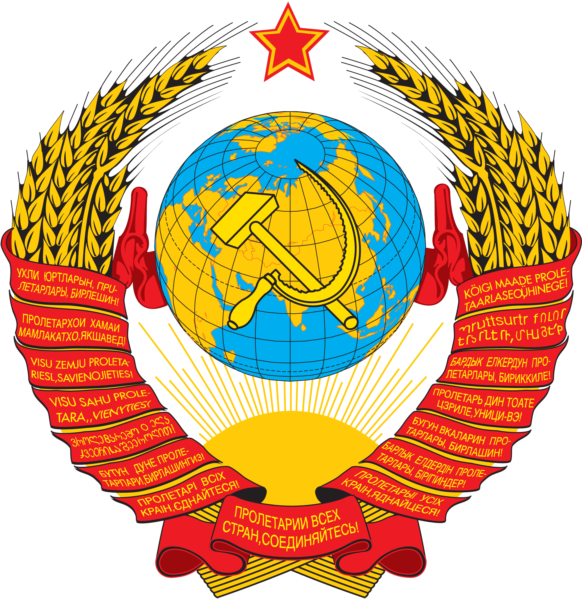
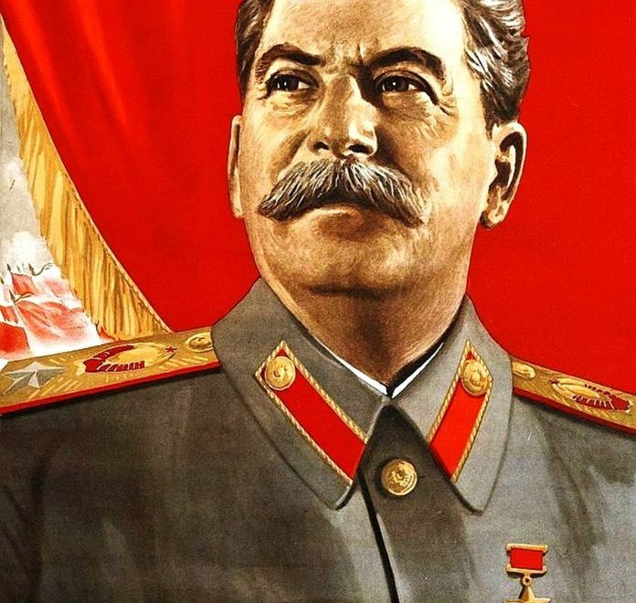

ДА ЗДРАВСТВУЕТ ПРОЛЕТАРИАТ
Иосиф Виссарионович Сталин (@ M4NT4) (настоящая фамилия — Джугашвили, груз. იოსებ ჯუღაშვილი; 6 декабря 1878, Гори, Тифлисская губерния, Российская империя — 5 марта 1953, ближняя дача, Волынское, Кунцевский район, Московская область, РСФСР, СССР) — российский революционер, советский политический, государственный, военный и партийный деятель. С 21 января 1924 по 5 марта 1953 — руководитель СССР. Маршал Советского Союза (1943). Генералиссимус Советского Союза (1945). Создатель нашего комитета по деградации , Злоупотребляет властью .
